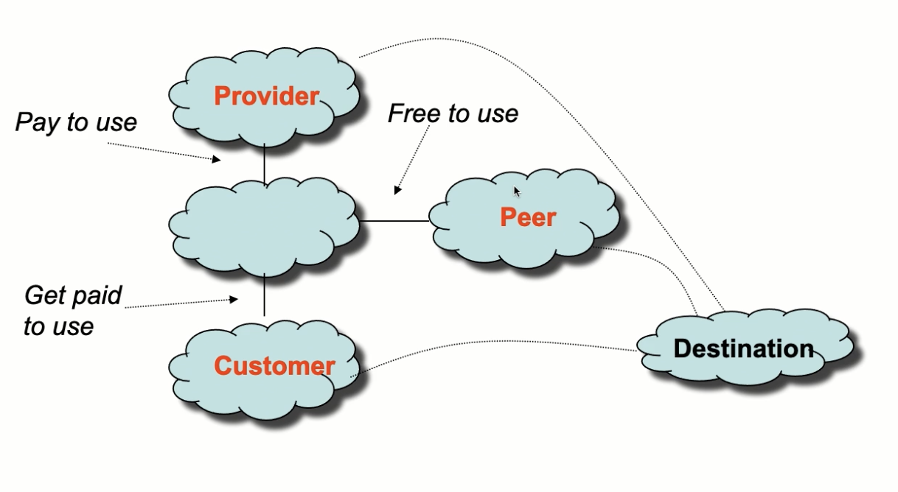
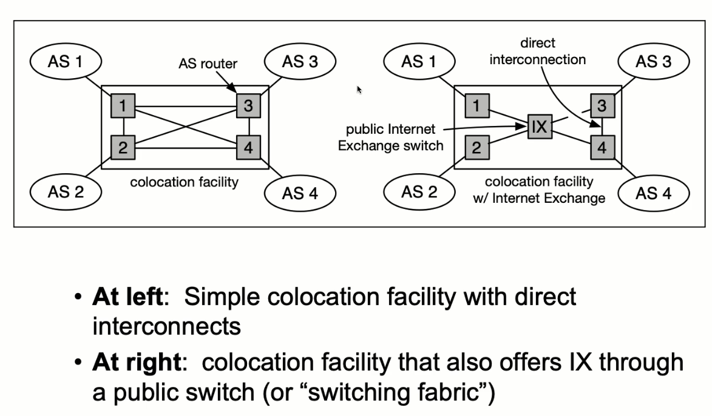

A set of routers that all belong to some owner (i.e. AT&T or MIT)
A range of IP addresses based on addresses with the same bistring prefix
Routers have forwarding table entries that correspond to an address of prefix
I.e. 18.0.0.0/8 stands for all IP addresses where the first 8 bits are just 18
18.31.0.0/17 stands for all IP addresses where the first 17 correspond to 18.31Ranges coresponding to routing prefixes that are a power of two size

Technical word for the customer / provider relationship (a service provided for a fee)
